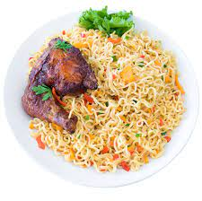

Food recipe
Noodles

Ingredients
- Noodles
- Pepper to taste
- Carrots
- Tomato slices
- Vegetable Oil
- Eggs
- Onions
Steps
- Add noodles to a pot containing water and bring to a boil
- Preheat your frying pan, then add the sliced tomatoes, onions, and fresh pepper and cook for another five minutes.
- After 4 minutes, drain the water from the noodles and add the remaining spices while still in the dish; the noodles will be soft and hot at this stage.
- Stir the two eggs together in the same bowl with the noodles before transferring to the frying pan.
- The fried tomatoes, onions, and peppers are in the frying pan; heat and stir for about five minutes, and you’re done.
- Serve with cool soft drinks. You just made one of my favorite Nigerian breakfasts.